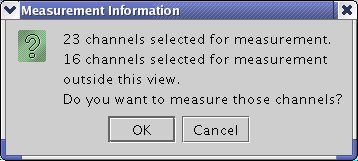

Deselect
Use the Deselect function to remove the cell that is currently in focus from the set of selected cells. A cell that is in focus has a bold border. When you deselect the cell it loses its blue background color. You can also deselect a cell by holding down the CTRL key and clicking the cell. Use Deselect All to deselect all selected cells.
Note The Select All Installed and Select All Configured functions allow you to select
channels that might not be displayed in the fixture delay window due to settings chosen in the
View menu (see Using the View menu). If this situation occurs,
the window shown below appears alerting you to this condition. This window appears when you start
the measurement, not during the selection process. Click OK if you want to
proceed with the measurement. Click Cancel if you want to make changes to
the channel selection before you start the fixture delay measurement.
